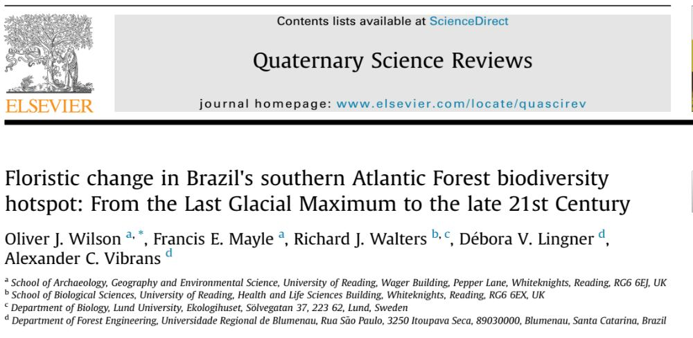
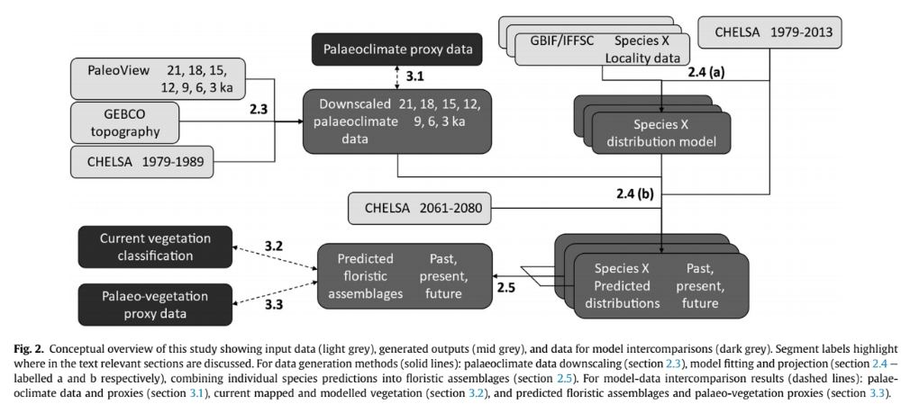
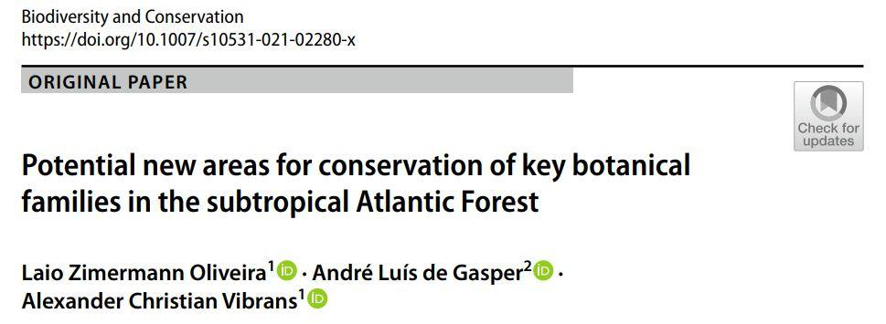
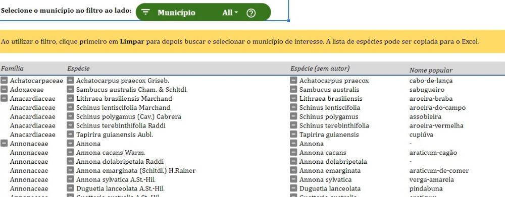
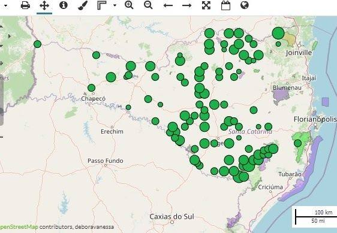
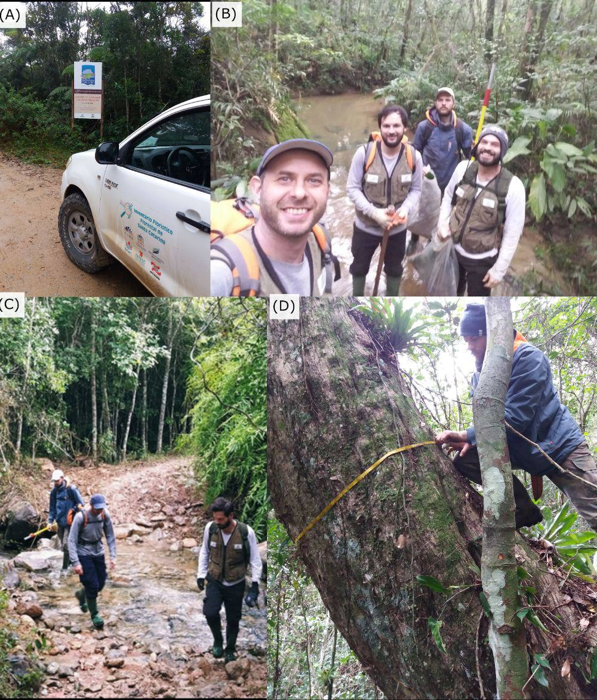
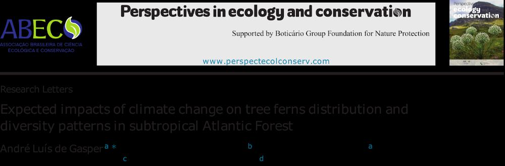

Investigação de mudanças florísticas nos últimos 21.000 anos - entre o Último Máximo Glacial e fim do século 21
Quarta-feira, 24 de Novembro 2021

O estudo de autoria do doutorando Oliver Wilson (Universidade de Reading, Inglaterra) e integrantes da equipe do IFFSC, estabeleceu uma inédita linha do tempo das mudanças florísticas ocorridas, nos últimos 21.000 anos na Floresta Atlântica do Sul do Brasil e, especialmente, em Santa Catarina. Esta linha de tempo foi tomada como base para a modelagem das prováveis mudanças da vegetação no cenário das mudanças climáticas até o ano de 2070.
A pesquisa integrou, de forma inédita no Brasil, várias bases de dados: a) registros paleoecológicos (análise de pólen de Angiospermas e Gimnospermas em sedimentos do quaternário; b) registros paleoclimáticos de temperatura e precipitação em sedimentos e cavernas como as de Botuverá (bases Paleoview e Speleothem), dados climáticos atuais e futuros até 2070 da base CHELSA, c) registros florísticos de 420 Unidades Amostrais do IFFSC em Santa Catarina e da base GBIF no RS e PR.

Estes dados serviram de base para modelar, numa resolução de pixels com 800x800 metros, a distribuição geográfica de 30 espécies-chave ou indicadoras (árvores e algumas ervas) que formam as 22 assembleias constituintes da Floresta Pluvial Atlântica, da Floresta com Araucária, da Floresta Semidecidual, dos Campos de Altitude e das Matinhas Nebulares. Desta forma, foi possível reconstruir a extensão destes ecossistemas em diversas épocas: 21.000, 18.000, 15.000, 12.000, 9.000, 6.000 e 3.000 AP, no presente e no ano de 2070.
Os resultados mostram, que em mais de 100.000 km² da Floresta Atlântica do Sul do Brasil haverá mudanças florísticas mais drásticas do que as ocorridas nos últimos 21.000 anos, portanto desde o Último Máximo Glacial.
Em resposta a estas mudanças, ocorrerá a expansão das Florestas Pluviais, com suas espécies, em clima mais quente, migrando da vertente atlântica em direção ao planalto, ocupando e terreno das Araucárias, que sofrerão uma drástica retração (aliás uma observação já feita – empiricamente - por Roberto Miguel Klein em meados do século XX). Por consequência, espécies constituintes da Floresta com Araucária sofrerão ainda mais ameaça de serem extintas do que nos dias atuais; isto porque estas, junto com as dos Campos e da Matinha Nebular – sob efeito do aquecimento global – não tem mais “para onde fugir” para escapar das temperaturas mais elevadas, uma vez que já ocupam as zonas de maior altitude do estado.
Estudo sugere novas áreas com potencial para a conservação de florestas ricas em mirtáceas, lauráceas e fabáceas em Santa Catarina
Segunda-feira, 13 Setembro 2021

Integrantes do IFFSC publicaram um estudo no qual são apontadas novas áreas com potencial para conservação de florestas ricas em mirtáceas (guamirins), lauráceas (canelas) e fabáceas (leguminosas) em Santa Catarina. O estudo utilizou os dados coletados pelo IFFSC na Floresta Ombrófila Densa (FOD), Floresta Ombrófila Mista (FOM) e Floresta Estacional Decidual (FED).
No total, seis áreas foram apontadas, sendo duas delas na FOD e quatro na FOM. A área com alta riqueza de mirtáceas na FOD está parcialmente sobreposta à APA Serra Dona Francisca (norte do estado), enquanto a área com alta riqueza de lauráceas está parcialmente sobreposta ao Parque Nacional da Serra do Itajaí. Em contraste, nenhuma das áreas com potencial para conservação na FOM se sobrepôs a Unidades de Conservação.
Além de uma alta riqueza de espécies pertencentes às famílias estudadas, as áreas apontadas também abrigam uma alta riqueza de espécies de outras famílias botânicas ― algumas áreas chegam a abrigar mais da metade de todas as espécies observadas pelo IFFSC no respectivo tipo florestal.
Unidades de Conservação (UCs) se mostraram importantes para a conservação das populações de espécies das famílias estudadas. O estudo sugere que a APA Serra Dona Francisca poderia ser expandida ou convertida a uma categoria de conservação mais restritivas do SNUC* visando promover a conservação de florestas com alta biodiversidade e biomassa. O estudo também enfatiza que florestas fora de UCs também merecem atenção no que diz respeito à conservação, fiscalização do cumprimento das leis ambientais e incentivos ao manejo sustentável de recursos florestais.
O estudo exemplifica o potencial dos dados do IFFSC ― um patrimônio da sociedade catarinense ― em gerar informações relevantes para a conservação e manejo dos recursos florestais catarinenses.
O estudo recebeu suporte da FAPESC (coleta de dados), IMA (bolsa de pesquisa) e CNPq (bolsas de produtividade).
* Sistema Nacional de Unidades de Conservação da Natureza
Algumas das áreas com potencial para conservação de florestas nativas:
Informações sobre as espécies encontradas nos municípios catarinenses são disponibilizadas pelo IFFSC
Sexta-feira, 30 Julho 2021
Desde 2007, um extensivo e contínuo trabalho de campo vem sendo realizado pelo IFFSC em todo estado. Um dos importantes resultados deste trabalho, é a ampliação do conhecimento da flora catarinense. No 1° Ciclo de Medições (2007 a 2011), foi registrado um total de 670 espécies no componente arbóreo (DAP ≥ 10 cm), encontradas em 499 Unidades Amostrais instaladas em áreas com floresta e vegetação em estágio inicial de sucessão.
O IFFSC já vem divulgando listas das espécies encontradas por fitofisionomia desde 2012 através da publicação dos livros e de artigos científicos. No entanto, pensando nas diferentes demandas de dados sobre a ocorrência das espécies em nosso estado, o IFFSC tem buscado outros meios de disponibilizar estas informações, possibilitando aos interessados a consulta mais prática aos dados. Neste sentido, foi disponibilizado no portal do projeto uma lista dinâmica, onde os usuários podem consultar a relação das espécies encontradas em 205 municípios catarinenses. Vale salientar que não há registro de espécies em todos os municípios, pois em alguns deles não foram implantadas Unidades Amostrais. Isso ocorre porque o IFFSC utilizou uma grade de pontos sistemática para definir a localização das parcelas, e alguns municípios não foram interceptados por nenhum ponto, por serem muito pequenos. Em outros casos, alguns municípios foram contemplados com pontos da grade nos quais não havia vegetação.

Também foi divulgado a lista das espécies do componente arbóreo com uma variedade de informações ecológicas como grau de ameaça, grupo ecológico, formas de raridade, dentre outras. Nesta lista, o usuário também pode identificar em quais regiões fitoecológicas e bacias hidrográficas cada espécie arbórea foi encontrada.
Uma outra forma de realizar consultas sobre as espécies registradas no IFFSC, é através de plataformas online, como Jabot, speciesLink e SiBBr, onde estão cadastradas exemplares de plantas coletadas pelo IFFSC. Todas as coletas do IFFSC foram tombadas e cadastradas nas plataformas pelo Herbário FURB, e incluem diferentes tipo de plantas: arbóreas, epífitos, pteridófitas e herbáceas.

Além disso, mapas com a ocorrência das espécies ameaçadas de extinção foram publicadas na plataforma do MonitoraSC. Os usuários podem consultar informações tanto das espécies ameaçadas de extinção definidas pela Resolução do Consema (2014), quanto pelo Livro Vermelho da Flora do Brasil (Martinelli e Moraes 2013). E ainda para este mês, está prevista a publicação do mapa com a ocorrência das espécies raras de Santa Catarina, definidas conforme IFFSC (2016).
Acesse:
Convênio com o IMA permite a ampliação da amostragem do IFFSC nas Unidades de Conservação
Sexta-feira, 07 Maio 2021
O projeto objeto do Convenio entre o IMA/SC e a FURB visa ampliar o conhecimento sobre a flora e vegetação das UCs estaduais, bem como subsidiar ações de conservação das espécies, comunidades e ecossistemas. Os estudos serão realizados em todas as 10 unidades de conservação estaduais e no seu entorno. Assim, os Parques Estaduais e Reservas Biológicas administrados pelo IMA, serão visitados para levantamentos florísticos (qualitativos) e coleta de material botânico fértil e para levantamentos fitossociológicos (quantitativos). Parcelas do IFFSC serão re-medidas nas UCs e outras novas serão instaladas. Os trabalhos começaram em abril e serão concluídas até outubro de 2021, por uma equipe composta pelos botânicos Anderson Kassner Filho, Nando Matheus Rocha e os engenheiros florestais Adilson Luiz Nicoletti e Marlon Yuri Andrade, todos egressos da FURB. Os recursos do projeto são oriundos de Compensação Ambiental.

Estudo avalia efeito de mudanças climáticas na ocorrência de xaxins
Terça-feira, 20 Abril 2021

O estudo liderado pela equipe do Herbário Dr. Roberto Miguel Klein - coordenado pelo prof. André L. de Gasper, integrante do IFFSC - analisou os possíveis efeitos das mudanças climáticas na distribuição e diversidade dos xaxins, espécies muito comuns nas florestas de Santa Catarina. Para elaborar este trabalho, dados de literatura, GBIF e do IFFSC foram utilizados. Os pesquisadores também apresentaram uma nova maneira de medir a incerteza dos modelos usando médias e intervalos de confiança.
Observou-se que mesmo as espécies que se beneficiam de locais mais quentes e úmidos podem sofrer reduções populacionais no futuro. Xaxins necessitam de água para reprodução; o gameta masculino, chamado anterozoide, precisa "nadar" até a oosfera (gameta feminino). São plantas de crescimento lento, mas comuns e muito abundantes em algumas regiões da Floresta Atlântica, especialmente a Floresta Ombrófila Densa (ou Pluvial). Esperava-se que por ocorrerem em ambientes mais quentes, se comparados a Floresta de Araucária, estas espécies poderiam ser favorecidas. Contudo, não foi o que os pesquisadores observaram.
Os principais achados do estudo foram:
- A maioria dos xaxins perderá áreas adequadas de ocorrência devido às mudanças climáticas.
- Dicksonia sellowiana Hook. pode ficar ainda mais ameaçada como resultado de restrições em sua distribuição.
- Em todos os cenários, as assembleias de samambaias arbóreas subtropicais na Mata Atlântica se tornarão menos ricas.
- Negligenciar as incertezas decorrentes da escolha dos modelos de circulação global pode levar a conclusões imprecisas.
Este trabalho foi feito e recebeu suporte de muitos que direta ou indiretamente auxiliaram na sua realização. FUMDES, financiando um projeto de Iniciação científica; FAPESC que financiou a coleta de dados do IFFSC; CAPES que financiou(a) duas bolsas de mestrado; CNPq por uma bolsa de produtividade.
Foto: João Paulo de Maçaneiro. Local: Faxinal do Bepe, PARNA Serra do Itajaí, Indaial/SC.
IFFSC na pauta de reunião do CONSEMA
13 de abril de 2021
Nova espécie é nomeada em homenagem ao biólogo do IFFSC
Segunda-feira, 22 Março 2021
A espécie Oxypetalum kassneri, da família Apocynaceae, é a 21° espécie nova de planta descoberta através dos levantamentos de campo do IFFSC. Conheça as outras espécies novas aqui.
Esta espécie de subarbusto foi coletada no município de São Joaquim, em fevereiro de 2019, a 1.232 m de altitude. O exemplar da espécie foi localizado em um afloramento rochoso situado em área de campo de altitude, nos Aparados da Serra Geral, que é uma região rica em espécies endêmicas. Esta região sofre pressão de práticas destrutivas da agricultura, pastagem e silvicultura, que ameaçam a manutenção das espécies endêmicas.
Em artigo científico publicado na revista Rodriguésia, a espécie é descrita por Héctor A. Keller e Luis A. Funez. Acesse a publicação para mais informações: Novelties in Oxypetalum (Apocynaceae: Asclepiadoideae): a new species and revalidation of the name O. megapotamicum
A coleta da espécie foi realizada pelo biólogo Anderson Kassner Filho, integrante do IFFSC desde 2017. O nome científico da nova espécie foi dado em homenagem ao biólogo, por sua dedicação e grande contribuição ao conhecimento da flora catarinense.
A prova desta dedicação, é que o biólogo já coletou mais de 5.000 plantas, todas depositadas no Herbário Roberto Miguel Klein (FURB). Anderson participará da próxima etapa do levantamento de campo, que iniciará em 12 de abril e terá como objetivo realizar o levantamento da flora em todas as unidades de conservação estaduais administradas pelo Instituto do Meio Ambiente de Santa Catarina (IMA).
Veja aqui uma interessante reportagem da OCP News sobre a nova espécie coletada pelo Anderson e sua experiência como botânico.
Acompanhe também nossas redes sociais para ficar por dentro das ações do projeto.
FlorestaSC
florestasc@furb.br 47 3221-6100
Página migrada de floresta.sc.gov.br.